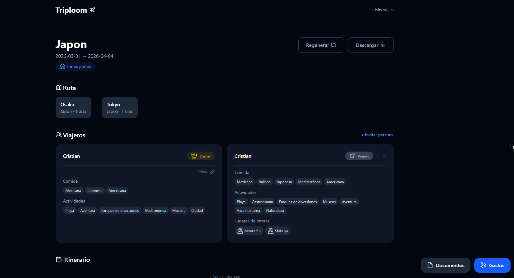
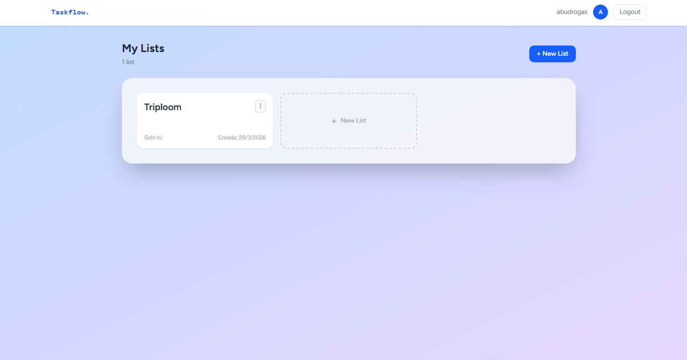
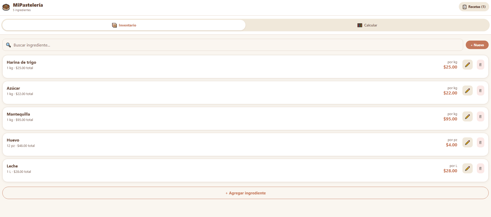

Available for work
Cristian Alejandro
Hernández Treviño
Full-Stack Developer — React · Node.js · TypeScript
I build web applications that solve real problems — from collaborative task managers to AI-powered travel planners. Based in Matamoros, open to remote and relocation.
Stack
Projects

Triploom
AI-poweredAI-powered travel organizer. Generates personalized day-by-day itineraries via Claude API, tracks budgets per category, stores travel documents, and supports multi-traveler trips with individual preferences.


MiPastelería
MobileMobile app for bakery owners to calculate exact production costs per recipe. Manages ingredient inventory, breaks down costs per unit, and saves recipes for future reference.
Contact
Looking for a junior full-stack role — remote or in Monterrey / Matamoros. Open to freelance projects too.
cristianhdz.t@outlook.com